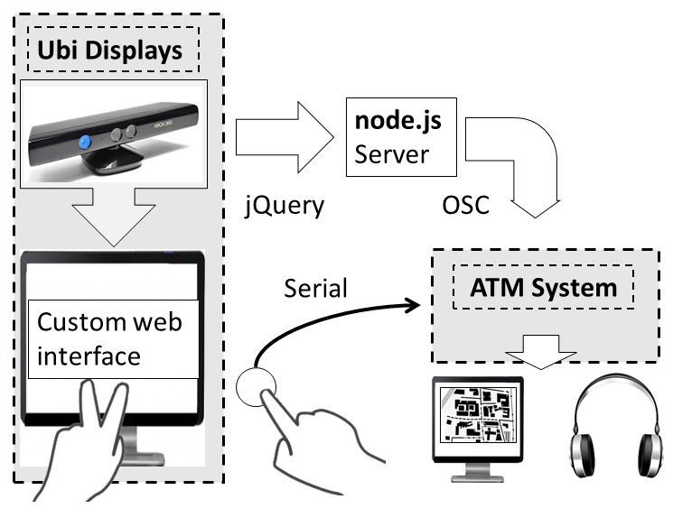
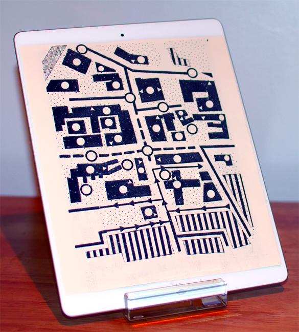
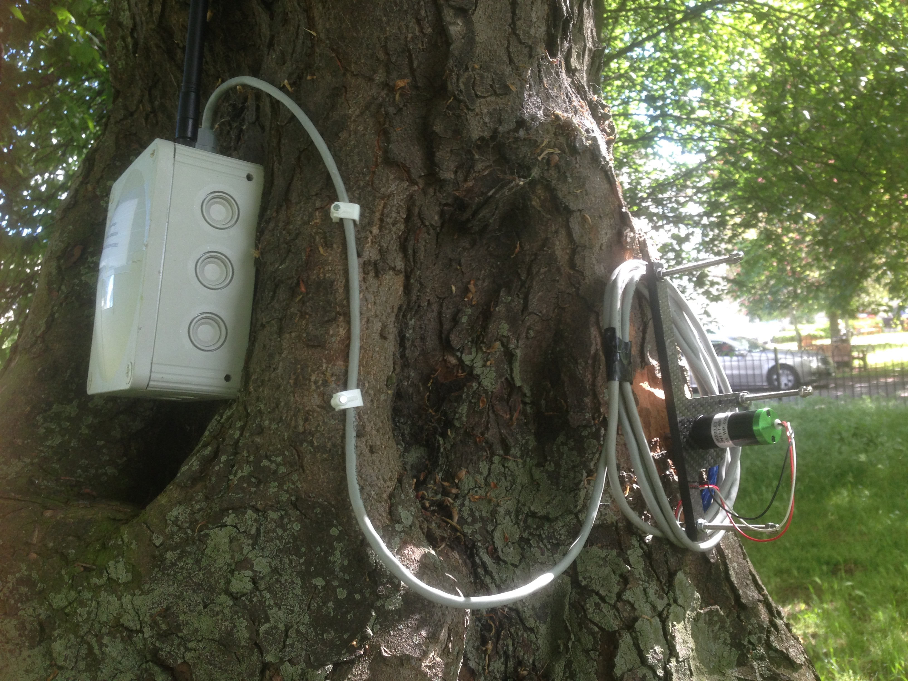

Project Demonstrations
Introduction
I've chosen two projects below to illustrate the variety of work I've done as a programmer and to demonstrate particular skills relevant to the Building City Dashboards project.
Project A is a way-finding application with a situated multimodal interface designed for accessibility. This demonstrates a 'bread-and-butter' Java application with typical administrative functionality available via a familiar menu system, implemented with a standard Model-View-Controller design pattern. Data management includes parsing XML to load and display a map, and embedded media files (immersive spatial audio) in the visualization. The system integrates a hand-tracking sensor and hardware buttons for robust user interaction.
Project B is a remote sensing device on an Internet-of-Things (IoT) platform. This is somewhat 'the other side' of a dashboard project, a node on a network providing regular data. I designed the prototype hardware capable of running on battery power in the field for over a year, with multiple integrated sensors and a radio. I programmed the firmware that connects the device to the LoRa network and encodes environmental data in an appropriate format for subsequent visualization on a dashboard.
I hope these two projects demonstrate that I can develop the required software for the Building City Dashboards project using established frameworks, while also showing I have experience implementing novel hardware applications and bespoke interactive experiences using a range of platforms and technologies. Additional project demonstrations are available, including those of a more artistic nature.
Audio Tactile Map Demo from Liam O'Sullivan on Vimeo.
Project A – Audio Tactile Map
Tactile surfaces can display information in a variety of applications for all users, but can be of particular benefit to blind and visually-impaired individuals. The Audio-Tactile Map (ATM) project involved the development of a system which tracks the actions of a user’s hands over a tactile paper map and responds with an auditory display providing text-to-speech rendered information and spatialized environmental sounds useful for navigation.
The prototype system integrated a variety of technologies (fig. 1); the desktop application was implemented in Java (fig. 2), while interface components used HTML and JavaScript with off-the-shelf hardware sensors (LEAP Motion and Microsoft Kinect) to achieve the project goals.


Project B – Tree Dendrometer
A dendrometer is a device for measuring the diameter of tree stems and periodic readings taken over time can provide valuable data on tree growth. A point dendrometer (fig. 4) is an instrument for measuring the change in stem size over time; in this project it is interfaced with an AtMega microcontroller via a high-resolution analogue-to-digital converter. In addition to near real-time data collected on tree growth, a temperature and humidity sensor is used to provide environmental readings.

The unit is battery-powered and can operate in the field for more than a year. Communication is through a radio module connected to a LoRa Wide Area Network (WAN) which passes data to a visualisation via an Application Enablement Platform (fig. 5).
The source code for this ongoing project is confidential, so the GitHub repository is private.